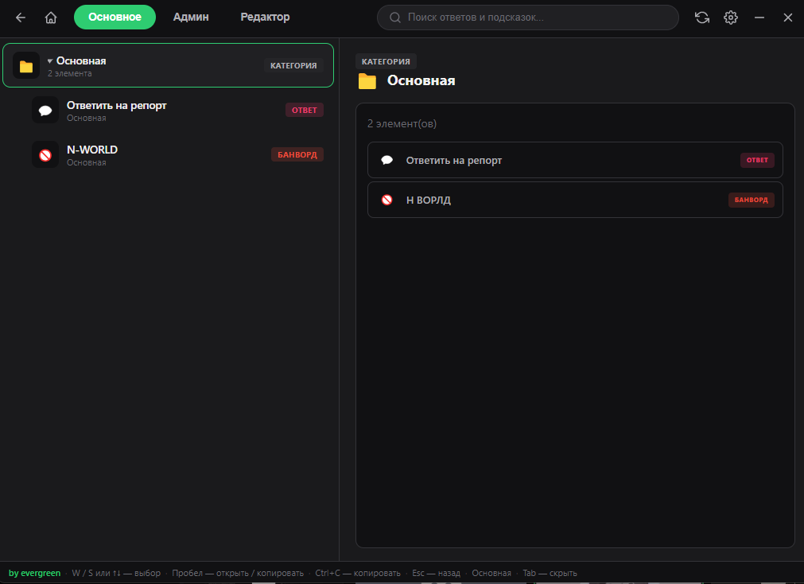

Основной TAB
База ответов всегда под рукой
Древовидное меню категорий с живым предпросмотром справа. Один взгляд — и нужный ответ скопирован в буфер.
- Категории, ответы, подсказки, команды и банворды в одном дереве
- Предпросмотр с полным текстом, бейджами и красной меткой наказания
- Избранное — закрепляйте часто используемое наверх
- Полная навигация с клавиатуры: W/S, стрелки, Space, Esc
- Окно перетаскивается, позиция запоминается между запусками
